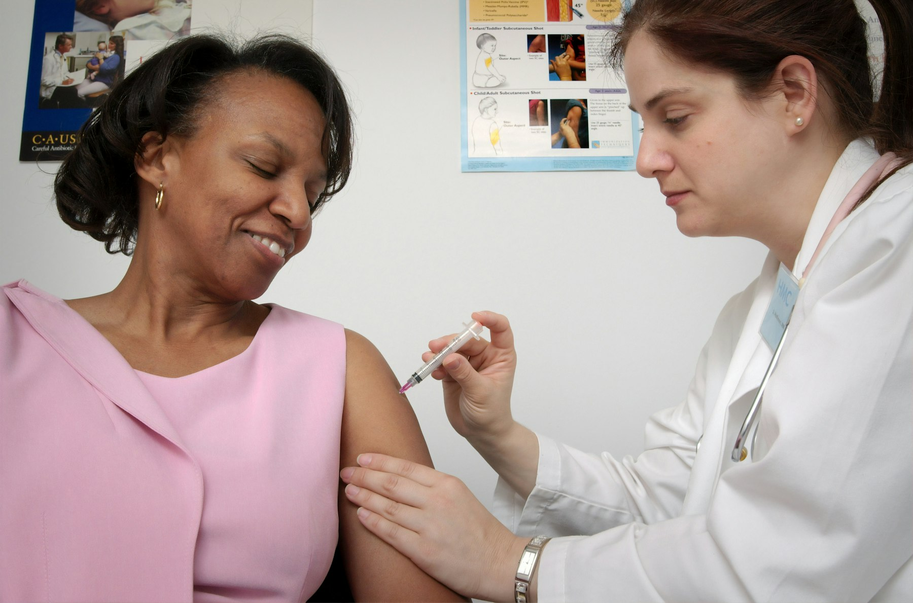

Trial Match is a multi-agent system that connects every patient to trials they qualify for, and gives every trial team a shortlist of people ready to join.
Patients are willing, and trials are open. What’s missing is the connection. Today that depends on a busy doctor remembering which trials exist and checking each one’s rules by hand.
Connect your record once. Your agent checks every open trial, asks for required information when something is missing, and shows only the trials that fit. Swipe right to apply, or let it apply for you.
Try it as a patient →Eligibility is checked before patients even arrive. From there, a quick swipe between two candidates builds the ranking, and the strongest matches are invited to pre-screening.
Try it as a clinician →If a patient doesn’t qualify after pre-screening, those results go straight back to their agent, which finds the next trial that fits. When someone finishes a trial, their results start the next search.
MedGemma reads. Code checks. Rules match. People decide.